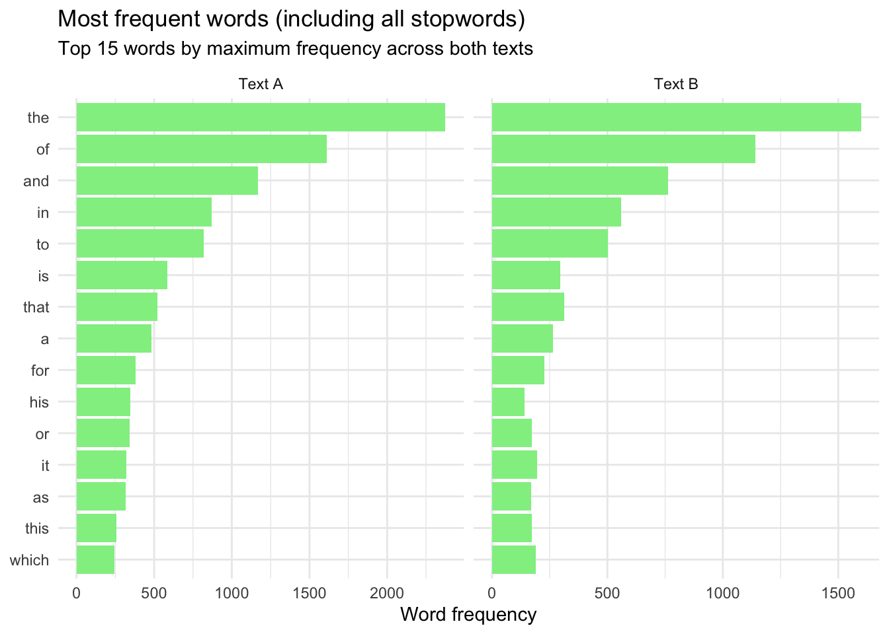
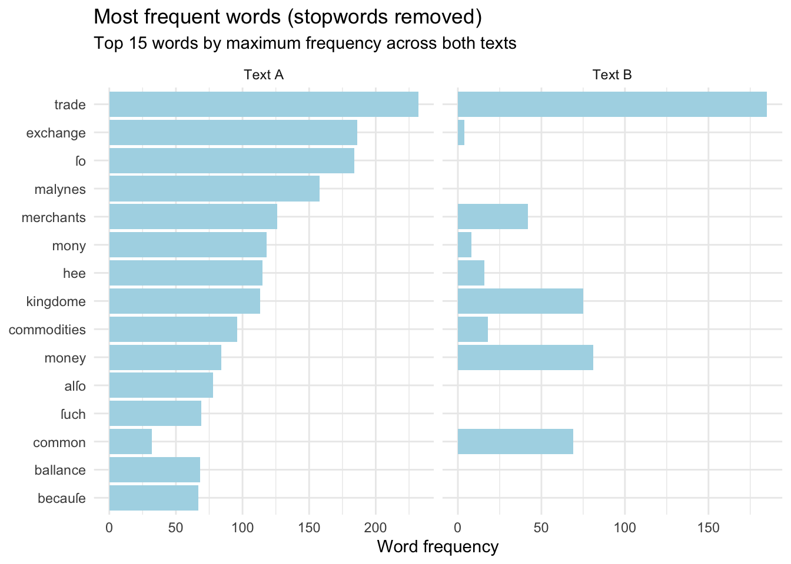

The following object is masked from 'package:readr':
col_factor
file_a <-"texts/A07594__Circle_of_Commerce.txt"file_b <-"texts/B14801__Free_Trade.txt"# Read the raw text files into Rtext_a <-read_file(file_a)text_b <-read_file(file_b)# Combine into a tibble for tidytext workflowstexts <-tibble(doc_title =c("Text A", "Text B"),text =c(text_a, text_b))texts
# A tibble: 2 × 2
doc_title text
<chr> <chr>
1 Text A THE CIRCLE OF COMMERCE. The Prooeme. HERODOTVS in his CLIO, reporte…
2 Text B CAP. I. The Causes of the want of Money in England. IT hauing pleas…
words <- texts |>unnest_tokens(word, text)# Here, I am removing the stopwords from my broader 'words' tibble.words_stopwords_removed <- words |>mutate(word =str_to_lower(word)) |>anti_join(all_stopwords, by ="word")# Here, I am counting the words in my broader 'words' tibble.total_word_count <- words |>count(doc_title)# Here, I am counting the words from my stopword-removed 'words_stopwords_removed' tibble, joining the counts of both documents, renaming and relocating the columns appropriately, and creating columns for the removed tokens' number and percentage. corpus_diagnostics <- words_stopwords_removed |>count(doc_title) |>full_join(total_word_count, by =join_by(doc_title)) |>rename(tokens_after_stopwords = n.x, total_tokens = n.y) |>relocate(tokens_after_stopwords, .after = total_tokens) |>group_by(doc_title) |>mutate(tokens_removed = (total_tokens - tokens_after_stopwords),percent_removed = (tokens_removed / total_tokens *100) ) |>ungroup()corpus_diagnostics
# A tibble: 2 × 5
doc_title total_tokens tokens_after_stopwords tokens_removed percent_removed
<chr> <int> <int> <int> <dbl>
1 Text A 33889 14694 19195 56.6
2 Text B 19922 8004 11918 59.8
Narrative:
56.64% of Document A’s words were removed and 59.82% of Document B’s words were removed by excluding the stopwords from each of them. With a difference of only ~3.18%, I would say these percentages are approximately the same. The large magnitude of these percentages indicates that a very substantial portion of both texts has been removed by excluding stopwords. While we are starting with the assumption that stopwords provide little-to-no meaning and will likely distract from our textual analysis, we should be careful to ensure that, given the substantial reduction in words across both texts, removing them does not greatly alter the meaning and outcomes of what we are assessing.
Section II
#Here, I am counting the frequency of words across both documents before stopword removal and sorting them by the most frequent words.word_frequency_no_removals <- words |>count(doc_title, word, sort =TRUE) |>pivot_wider(names_from = doc_title,values_from = n,values_fill =0 ) |>mutate(max_n =pmax(`Text A`, `Text B`)) |>arrange(desc(max_n))word_frequency_no_removals
# A tibble: 6,829 × 4
word `Text A` `Text B` max_n
<chr> <int> <int> <int>
1 the 2375 1598 2375
2 of 1612 1142 1612
3 and 1170 763 1170
4 in 870 559 870
5 to 818 503 818
6 is 586 296 586
7 that 519 314 519
8 a 484 263 484
9 for 381 226 381
10 his 348 142 348
# ℹ 6,819 more rows
#These are the 15 highest-frequency words overall:word_frequency_no_removals |>slice_head(n =15)
# A tibble: 15 × 4
word `Text A` `Text B` max_n
<chr> <int> <int> <int>
1 the 2375 1598 2375
2 of 1612 1142 1612
3 and 1170 763 1170
4 in 870 559 870
5 to 818 503 818
6 is 586 296 586
7 that 519 314 519
8 a 484 263 484
9 for 381 226 381
10 his 348 142 348
11 or 342 172 342
12 it 321 196 321
13 as 318 169 318
14 this 259 172 259
15 which 243 190 243
#Next, I am plotting these in ggplot.word_frequency_no_removals |>slice_head(n =15) |>pivot_longer(cols =c(`Text A`, `Text B`),names_to ="doc_title",values_to ="n" ) |>mutate(word =fct_reorder(word, n, .fun = max)) |>ggplot(aes(n, word)) +geom_col(fill ="lightgreen") +facet_wrap(~ doc_title, scales ="free_x") +labs(title ="Most frequent words (including all stopwords)",subtitle =paste0("Top 15 words by maximum frequency across both texts" ),x ="Word frequency",y =NULL ) +theme_minimal()

#Here, I am counting the frequency of words across both documents *AFTER* stopword removal and sorting them by the most frequent words.word_frequency_stopwords_removed <- words_stopwords_removed |>count(doc_title, word, sort =TRUE) |>pivot_wider(names_from = doc_title,values_from = n,values_fill =0 ) |>mutate(max_n =pmax(`Text A`, `Text B`)) |>arrange(desc(max_n))word_frequency_stopwords_removed
#Next, I am plotting these in ggplot.word_frequency_stopwords_removed |>slice_head(n =15) |>pivot_longer(cols =c(`Text A`, `Text B`),names_to ="doc_title",values_to ="n" ) |>mutate(word =fct_reorder(word, n, .fun = max)) |>ggplot(aes(n, word)) +geom_col(fill ="lightblue") +facet_wrap(~ doc_title, scales ="free_x") +labs(title ="Most frequent words (stopwords removed)",subtitle =paste0("Top 15 words by maximum frequency across both texts" ),x ="Word frequency",y =NULL ) +theme_minimal()

Narrative:
Before stopword removal, stopwords completely dominate in frequency across both texts, with similar distributions across them. After stopword removal, topic-specific words are much more visible across the top 15 words, and it is much easier to get a sense for the common substantive material in the texts. For example, both texts clearly relate to “trade,” a high-frequency word across both texts, and they both frequently discuss “money” and “merchants.” At the same time, removing stopwords demonstrates differences in the common words between the text; for example, “exchange,” ’Malynes,” and “ballance” are substantive words common in Text A but absent or near-absent from Text B.
There are two clear drawbacks of removing the stopwords that we have removed, because of the information that is made less visible by doing so. First, we have less information about the grammatical and syntactic structure of the texts, because a large portion of the ‘functional’ words that convey this information are stopwords. Second, and relatedly, we have no means for understanding the negation of any of our most common words, because “no” and “not” are stopwords that we have removed.
Section III
#Here, I am removing only the tidytext standard stopwords, keeping the additional Early Modern stopwords that we previously identified. words_standard_stopwords_removed <- words |>mutate(word =str_to_lower(word)) |>anti_join(stop_words, by ="word")#Here, I am counting the frequency of the words and displaying the 15 most-frequent words across both texts with only standard tidytext stopwords removed.words_standard_stopwords_removed |>count(doc_title, word, sort =TRUE) |>pivot_wider(names_from = doc_title,values_from = n,values_fill =0 ) |>head(15)
Without the custom stopwords removed, “haue,” “bee,” and “hath” have entered the 15 most frequent words, displacing “common,” “balance,” and “becauſe.” These words are simply archaic spellings/forms of the words “have,” “be,” and “has,” standard functional words that are not specific to the subject matter at hand and convey no information about it.
A research question for which analyzing the frequency of words like these might be valuable could be one where the researcher wants to learn how spellings and word forms have changed over time. Such a project might compare the relative frequency of these words and their modern equivalents in texts written in different years. Stylistic or linguistically focused projects like this demonstrate why there is no universal set of stopwords: stopword lists are meant to remove words that add no “value” to the analysis, but if the words or structures themselves are the subject for analysis, they clearly should not be removed.
Final Reflection
I would tell my naive friend that they are mistaken to believe that the pre-processing decisions we make have no impact on the output of our textual analyses. Clearly, words that are “important” for one project’s purpose (like that of a diachronic, linguistic or stylistic analysis) are removable noise for others (like those focused on the representation of commerce and trade in 16th century England). This exploration has illustrated the evident relevance of stopwords, especially when one is analyzing frequency counts (as stopwords may dominate them before their removal), and also for situating the syntactic and semantic context of the text under review.